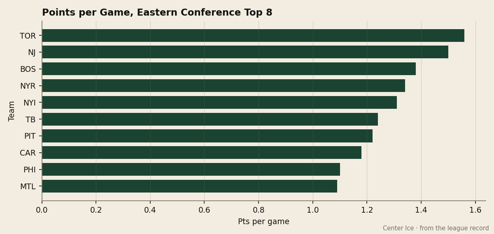
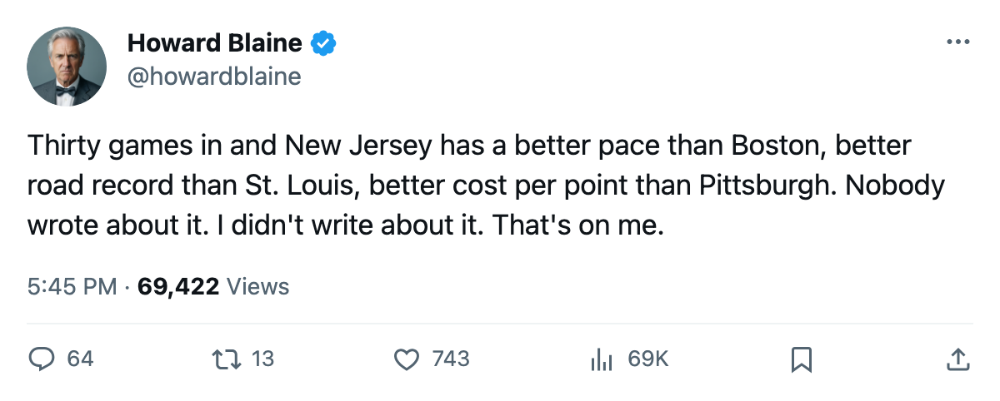
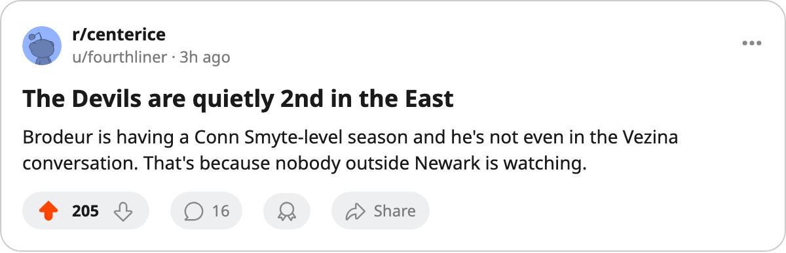

The Quiet 1.50: New Jersey Has the East's Second-Best Pace, 11 Wins Abroad, and 5 Games in Hand on Everyone
The Devils have played 30 games, sit 2nd in the conference on points per game, and have not been mentioned once by this desk this season.
 Howard BlaineSenior writer, The Blaine Rankings · The Hockey Gazette
Howard BlaineSenior writer, The Blaine Rankings · The Hockey Gazette
 New Jersey Devils has 45 points in 30 games. That is 1.50 points per game, second only to
New Jersey Devils has 45 points in 30 games. That is 1.50 points per game, second only to  Toronto Maple Leafs at 1.56, and the coverage on these pages has not caught up with the record. The Devils have appeared in zero pieces since October.
Toronto Maple Leafs at 1.56, and the coverage on these pages has not caught up with the record. The Devils have appeared in zero pieces since October.

The arithmetic is hard to argue with. A 1.50 pace carries 123 points over 82 games. Toronto Maple Leafs paces for 128. No other club in the league, East or West, projects above 121. New Jersey Devils has played 30 games, five fewer than Toronto Maple Leafs and five fewer than  New York Rangers, and sits second in the Eastern Conference standings on the strength of what it has done in the games it has played.
New York Rangers, and sits second in the Eastern Conference standings on the strength of what it has done in the games it has played.
The road record and the defense
The Devils are 11 and 3 away from home. Only Toronto has a better road winning percentage (11 and 2). New Jersey's 11 wins on the road are the most by any club in the Atlantic, and they came with a goaltender who has not been beaten often enough to notice.  Martin Brodeur93 is 19 and 6 in 25 games, allowing 1.86 goals a night on a 0.904 save percentage. The Bureau rates him 93 overall, tied with
Martin Brodeur93 is 19 and 6 in 25 games, allowing 1.86 goals a night on a 0.904 save percentage. The Bureau rates him 93 overall, tied with  Marty Turco95 for the highest mark on any goaltender in the league.
Marty Turco95 for the highest mark on any goaltender in the league.
The defense behind him has given up 66 goals in 30 games, or 2.20 per night. That is 4th in the league, behind only  Dallas Stars at 1.94, Toronto at 2.15, and
Dallas Stars at 1.94, Toronto at 2.15, and  Columbus Blue Jackets at 2.19. New Jersey has done it without a Norris candidate and without a defenseman whose name appears in any column on these pages.
Columbus Blue Jackets at 2.19. New Jersey has done it without a Norris candidate and without a defenseman whose name appears in any column on these pages.
No scorer in the top 30
Not one New Jersey player appears among the league's top 30 scorers. The Devils score 3.07 goals per game, second in the Atlantic to Toronto's 3.53, and they do it on balance. No man on that roster is carrying a 1.00 point-per-game pace. The goals come from everywhere and from nowhere in particular, the hallmark of a team that plays structure hockey and asks its goaltender to make the last save.
This reflects the design rather than a shortage of talent. Kerry Morassutti told The Tunnel's Jan Kowalczyk in early December that he wished his payroll were spread wider in Colorado. The Devils have done the opposite: concentrated the money in Brodeur and a blue line that does not need to score, and filled the rest with bodies that grind. It has produced 45 points in 30 games.
The business case
New Jersey spends $58.20M and produces 45 points. That is $1.29M a point, 5th-cheapest in the league behind  Nashville Predators ($1.09M), Dallas Stars ($1.18M),
Nashville Predators ($1.09M), Dallas Stars ($1.18M),  Pittsburgh Penguins ($1.25M), and
Pittsburgh Penguins ($1.25M), and  Edmonton Oilers ($1.26M). The Devils take in $59.72M in revenue, 3rd in the league behind Toronto ($78.65M) and
Edmonton Oilers ($1.26M). The Devils take in $59.72M in revenue, 3rd in the league behind Toronto ($78.65M) and  Detroit Red Wings ($64.37M), and clear a profit of $30.64M, also 3rd. They fill 16,977 seats a night, the 4th-best attendance in the league, at a ticket price of $82.
Detroit Red Wings ($64.37M), and clear a profit of $30.64M, also 3rd. They fill 16,977 seats a night, the 4th-best attendance in the league, at a ticket price of $82.
The business of New Jersey hockey is healthy. The hockey business is healthier. Both facts sit in the same building in Newark and neither has reached print on these pages.
What is ahead
New Jersey Devils has 52 games remaining, the most of any club in the Eastern Conference. Toronto Maple Leafs has 48. New York Rangers has 47. The Devils can close the gap on Toronto because the gap is 8 points and the schedule is 4 games longer than Toronto's.
The immediate test is New York Rangers, twice. New Jersey meets the Rangers on 2005-12-23 at Madison Square Garden, where the season series so far reads 0 and 1 against the Devils. The Rangers have 47 points in 35 games. The Devils have 45 in 30. The game on Friday decides which pace holds through the Christmas week.
| Club | GP | PTS | Pace/82 | GA/G | Road W-L | Cost/Point |
|---|---|---|---|---|---|---|
| Toronto Maple Leafs | 34 | 53 | 128 | 2.15 | 11-2 | $1.70M |
| New Jersey Devils | 30 | 45 | 123 | 2.20 | 11-3 | $1.29M |
 Boston Bruins Boston Bruins | 32 | 44 | 113 | 2.47 | 13-3 | $1.37M |
| New York Rangers | 35 | 47 | 110 | 2.60 | 8-7 | $1.98M |
 New York Islanders New York Islanders | 32 | 42 | 108 | 2.72 | 7-8 | $1.45M |
Brodeur is playing the kind of season that won him a Conn Smythe in the spring. The Devils are playing the kind of season that belongs in every conversation about the top of the Eastern Conference, and they are in none of them. A gap this desk intends to close.

